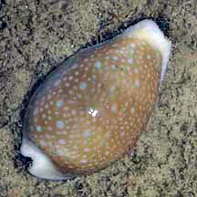
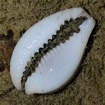
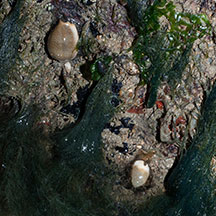
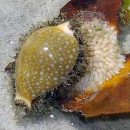
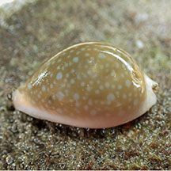
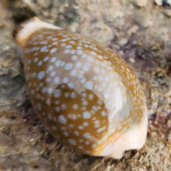
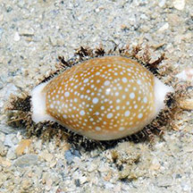

|
|
| shelled snails text index | photo index |
| Phylum Mollusca > Class Gastropoda > Family Cypraeidea |
| Miliaris
cowrie Erosaria miliaris Family Cypraeidae updated Jul 2020 Where seen? This cowrie with a pretty beige spotted shell is commonly seen on our Northern shores, under and on rocks among sponges, sea fans. Also on sandy and silty areas among seagrass. It was previously known as Cypraea miliaris. Features: 2.5-4cm, up to 5cm. Shell is pear-shaped, beige to light brown with white spots all over it and a broad white margin around the base. Underside completely white (no markings) and the 'teeth' are not coloured. The living animal has a 'hairy' dark brown mottled mantle. Sometimes mistaken for a sea slug. When the shell is completely covered in its mantle, it is sometimes mistaken for a hairy sea slug. Here's how to tell apart hairy slugs and snails more on how to tell apart slugs and animals that look like slugs. |
 Pulau Sekudu, Jul 04 |
 Tanah Merah, Aug 09 |
 'Teeth' are not coloured.. |
| In a pair: This cowrie is often found as a pair of male and female. If you find one, the other is usually not far away! A mother cowrie stays over her eggs after she lays them, covering the egg mass with her foot. |
|
 Miliaris cowries are often seen in a pair. Pulau Sekudu, Jun 06 |
 Mama cowrie guarding her eggs. Chek Jawa, Feb 05 |
| Miliaris cowries on Singapore shores |
On wildsingapore
flickr
|
| Other sightings on Singapore shores |
 Lazarus Island, Jan 24 Photo shared by Vincent Choo on facebook. |
 Beting Bemban Besar, May 24 Photo shared by Che Cheng Neo on facebook. |
 Terumbu Semakau, May 13 |
|
Links
References
|